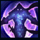
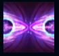
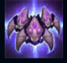
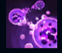
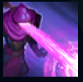

Malzahar
| Malzahar The Prophet Of The Void | |
|---|---|
| Release date | 01.06.2010 |
| Class | Battlemage |
| Positions | Middle |
| Resource | Mana |
| Range type | Ranged |
| Adaptive type | Magic |
| Base statistics | |||
| Health | 537 – 2016 | Mana | 375 – 842.5 |
| Health regen. | 6 – 16.2 |
Mana regen. | 8 – 21.6 |
| Armor | 18 – 77.5 | Attack damage | 55 – 106 |
| Magic resist. | 30 – 38.5 | Crit. damage | 175% |
| Move. speed | 335 | Attack range | 500 |
Malzahar este un clarvăzător plin de zel care luptă cu încredere pentru unificarea tuturor formelor de viață, mânat de convingerea că Vidul care se întinde acum în Runeterra este calea către mântuirea tuturor. În pustietatea deșertului Shurimei, a urmat sfatul vocilor ce-i șopteau în minte, iar acestea l-au condus către ținutul Icathiei antice. Printre ruinele acelui tărâm, a privit direct în inima întunecată a Vidului și a primit noi puteri și un nou scop în viață. Acum, Malzahar se consideră un păstor spiritual, înzestrat cu puterea de a-i aduce pe ceilalți în turma sa... și de a chema în ajutorul lui videmeridele ce se ascund în abis. |  |
TRANSĂ Dacă nu a suferit recent daune sau efecte de control al maselor, Malzahar reduce masiv daunele primite și primește imunitate la controlul maselor, efect ce se încheie la scurt timp după ce suferă daune. |
||
|---|---|---|---|---|
 |
CHEMAREA VIDULUI Malzahar deschide două portaluri către Vid. După scurt timp, acestea încep să tragă cu proiectile care provoacă daune magice și amuțesc campionii inamici. |
|||
 |
OASTEA VIDULUI Malzahar invocă videmeride care atacă inamicii din apropiere. |
|||
|  |
VIZIUNI MALEFICE Malzahar otrăvește mintea țintei cu viziuni malefice și îi provoacă daune în timp. Folosirea altor vrăji asupra țintei va reîmprospăta ''Viziunile''. Dacă ținta moare cât timp este afectată de ''Viziuni'', acestea se transferă către o altă unitate inamică din apropiere, iar Malzahar primește mană. Videmeridele invocate de Malzahar sunt atrase de unitățile afectate de ''Viziuni''. |
|||
 |
STRÂNSOAREA VIDULUI Malzahar folosește esența Vidului pentru a suprima un campion inamic într-o zonă energetică negativă, care provoacă daune. |